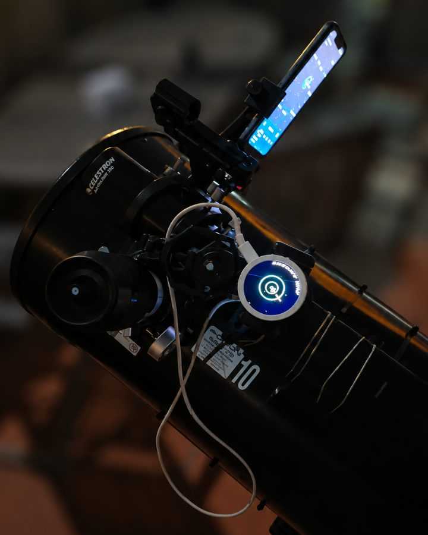

{{puck.features.title}}
-
{{puck.features.mapTitle}}
{{puck.features.map}}
-
{{puck.features.solveTitle}}
{{puck.features.solve}}
-
{{puck.features.listsTitle}}
{{puck.features.lists}}
-
{{puck.features.nightTitle}}
{{puck.features.night}}
-
{{puck.features.planetariumTitle}}
{{puck.features.planetarium}}
-
{{puck.features.linkTitle}}
{{puck.features.link}}
{{puck.setups.title}}
{{puck.setups.intro}}
- {{puck.setups.one}}
- {{puck.setups.two}}
{{puck.setups.note}}

{{puck.needs.title}}
- {{puck.needs.board}}
- {{puck.needs.cable}}
- {{puck.needs.computer}}
- {{puck.needs.app}}
{{puck.install.title}}
{{puck.install.browser}}
{{puck.install.unsupported}}
{{puck.install.notAllowed}}
{{puck.install.erase}}
{{puck.install.link}}
{{puck.install.buildTitle}}
- {{puck.install.step1}}
- {{puck.install.step2}}
- {{puck.install.step3}}
{{puck.install.note}}
{{puck.install.warning}}
{{puck.about.title}}
{{puck.about.licence}}
{{puck.about.disclaimer}}
{{puck.cta}} {{puck.get}}